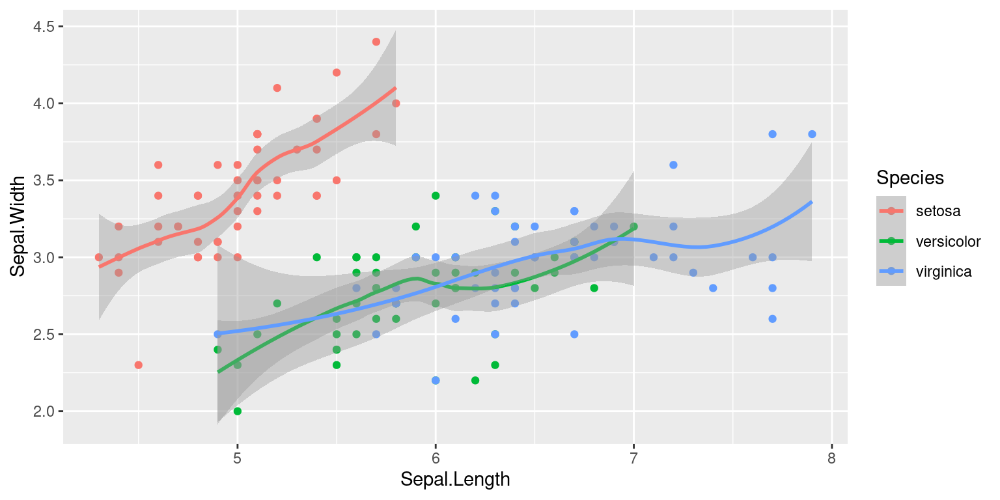
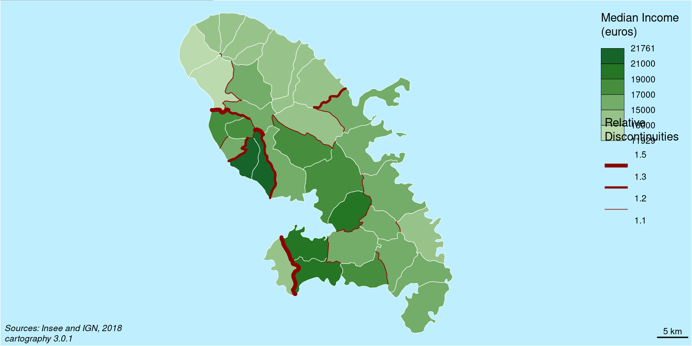

Introduction à R
M2 IGAST
2020-2021
Ressources
Quasi-infinité de ressources en lignes, parmi lesquelles :
- les cheat-sheets :
Diapositives de ce cours disponibles sur
R et Rstudio
R est un outil dédié aux statistiques et à l'analyse de données, à la fois:
- un langage de programmation (de script)
- un logiciel (interpréteur, console, gestion I/O, affichage )
RStudio est l' IDE de R:
- Editeur
- Console R
- Environnement (objets en mémoire)
- Affichage des graphiques et Aide
- Gestion des fichiers, packages
Points forts
Combo R-Rstudio gratuit, libre et multi-plateformes
Polyvalence et flexibilité («on peut tout faire avec R»)
Packages spécialisés : 15192 packages officiels https://cran.r-project.org/web/views/
Graphiques de haute qualité (
ggplot2)Manipulation de données (
dplyr,readr)Modernité : Applet shiny, RStudio Server, programmation fonctionnelle
En évolution constante
Points faibles
- Courbe de progression "raide"
- Éparpillement (relatif) cf. python ou javascript
- Performances ⚠ dans certains cas (e.g. boucles imbriquées)
- Mémoire : pas de gestion fine, ni streaming ⚠ de base
- 3D limitée
- Interactivité limitée (user input)
- Maintenabilité du code / package
- Mono-threaded , programmation parallèle non-immédiate
Rstudio vite fait
4 panels :
- Éditeur
- Environnement
- Consoles
- affichage (graphiques et doc notamment)
6 raccourcis quotidiens
Complétion : touche TAB
Éxécution ligne-à-ligne : Ctrl + Entrée
Affichage documentation: curseur sur mot-clé puis touche F1
Commande précédente (historique console) : touche 🡑
Effacer le contenu de la console : Ctrl + L
Focus(curseur) sur Console : Ctrl + 2
Focus(curseur) sur Éditeur : Ctrl + 1
Liste complète sur: https://support.rstudio.com/hc/en-us/articles/200711853-Keyboard-Shortcuts
Concepts du langage
Doc, packages, répertoire
Afficher la documentation dans Rstudio
Pour une fonction e.g. mean :
?mean
# ou
help("mean")Pour un terme
help.search("chi square")Pour un package
help(package = "dplyr") Installer et charger un package
Package R : ensemble de fonctions, parfois accompagnées de données
Le chargement d'un package rend toutes ses fonctions disponibles
install.packages("dplyr")library(dplyr) # charge le package
data("starwars") #invoque le dataset starwars
paged_table(head(starwars)) #premières lignes du datasetWorking directory
Connaître le repertoire de travail: fonction getwd()
Définir le répertoire de travail
Unix:
setwd("le/path/vers/l'emplacement/")Pour windows:
setwd("C:\\path\\bizarrrement\\exprimé\\vers\\l'emplacement")`⚠ éviter les espaces et accents dans les chemins
Concepts du langage
Données et Structures de données
Affectation
Signe <- ou =
x <- 1
x*2 # affichage sortie standard## [1] 2x <- "abc"
x ## [1] "abc"x <- 4
x + "b"## Error in x + "b": argument non numérique pour un opérateur binaireNom de variables
- case sensitive :
A!=a - longueur illimitée
- caractères alphanumériques (éventuellement accentués suivant
localeToCharset(), à éviter) .et_autorisées
classes
La fonction class renvoie la classe des objets R
w <- 12.5
class(w)## [1] "numeric"x <- TRUE
class(x)## [1] "logical"y <- "abc"
class(y)## [1] "character"classes
z1 <- c("Leonardo", "Rapahelo", "Michelangelo", "Donatello")
class(z1)## [1] "character"z2 <- c(1,3,5,7,9)
class(z2)## [1] "numeric"z3 <- c(1,3,5,7,"pouet")
class(z3) # ? Quelle est la classe de z3 ? Pourquoi ?
On peut faire un peu de POO en R, nous ne le ferons pas.
Aperçu des collections et tableaux
Vecteurs définis par c() (extension)
w <- c(1,2,3,4,5)
w + 1 ## [1] 2 3 4 5 6ou vector(mode, length) (initialisation, ~intension)
v <- vector("character", 5)
v ## [1] "" "" "" "" ""Tous les éléments doivent être de même type
Aperçu des collections et tableaux
Tableaux définis par array(data, dim )
v <- array("go", c(2,3))
v ## [,1] [,2] [,3]
## [1,] "go" "go" "go"
## [2,] "go" "go" "go"Matrices
m <- matrix(1, nrow = 4, ncol = 8)
m ## [,1] [,2] [,3] [,4] [,5] [,6] [,7] [,8]
## [1,] 1 1 1 1 1 1 1 1
## [2,] 1 1 1 1 1 1 1 1
## [3,] 1 1 1 1 1 1 1 1
## [4,] 1 1 1 1 1 1 1 1Objets structurés
Objets plus complexes (~struct en C, named tuple en python)
tmnt <- list(
nom= c("leo", "raph", "mick", "don"),
couleur =c("bleu","rouge", "orange", "violet"),
age=17:14
)
tmnt## $nom
## [1] "leo" "raph" "mick" "don"
##
## $couleur
## [1] "bleu" "rouge" "orange" "violet"
##
## $age
## [1] 17 16 15 14Objets structurés imbriqués
les attributs peuvent être de longueur différentes, un attribut peut lui même être une liste : ici l'attribut tmnt de l'objet nested est une liste
nested <- list(tmnt= tmnt,
auteurs =c("Kevin Eastman","Peter Laird"),
annee_parution= 1984)
nested## $tmnt
## $tmnt$nom
## [1] "leo" "raph" "mick" "don"
##
## $tmnt$couleur
## [1] "bleu" "rouge" "orange" "violet"
##
## $tmnt$age
## [1] 17 16 15 14
##
##
## $auteurs
## [1] "Kevin Eastman" "Peter Laird"
##
## $annee_parution
## [1] 1984Dataframes
Si tous les attributs d'un objet/liste ont la même taille, on parle de dataframe (~cf panda en python).
Format courant (et fortement conseillé) :
- variables en colonnes
- individus (observations) en lignes
Le dataframe est l'objet standard de R.
## Sepal.Length Sepal.Width Petal.Length Petal.Width Species
## 1 5.1 3.5 1.4 0.2 setosa
## 2 4.9 3.0 1.4 0.2 setosa
## 3 4.7 3.2 1.3 0.2 setosa
## 4 4.6 3.1 1.5 0.2 setosa
## 5 5.0 3.6 1.4 0.2 setosa
## 6 5.4 3.9 1.7 0.4 setosa
## 7 4.6 3.4 1.4 0.3 setosa
## 8 5.0 3.4 1.5 0.2 setosa
## 9 4.4 2.9 1.4 0.2 setosa
## 10 4.9 3.1 1.5 0.1 setosa
## 11 5.4 3.7 1.5 0.2 setosa
## 12 4.8 3.4 1.6 0.2 setosa
## 13 4.8 3.0 1.4 0.1 setosa
## 14 4.3 3.0 1.1 0.1 setosa
## 15 5.8 4.0 1.2 0.2 setosa
## 16 5.7 4.4 1.5 0.4 setosa
## 17 5.4 3.9 1.3 0.4 setosa
## 18 5.1 3.5 1.4 0.3 setosa
## 19 5.7 3.8 1.7 0.3 setosa
## 20 5.1 3.8 1.5 0.3 setosa
## 21 5.4 3.4 1.7 0.2 setosa
## 22 5.1 3.7 1.5 0.4 setosa
## 23 4.6 3.6 1.0 0.2 setosa
## 24 5.1 3.3 1.7 0.5 setosa
## 25 4.8 3.4 1.9 0.2 setosa
## 26 5.0 3.0 1.6 0.2 setosa
## 27 5.0 3.4 1.6 0.4 setosa
## 28 5.2 3.5 1.5 0.2 setosa
## 29 5.2 3.4 1.4 0.2 setosa
## 30 4.7 3.2 1.6 0.2 setosa
## 31 4.8 3.1 1.6 0.2 setosa
## 32 5.4 3.4 1.5 0.4 setosa
## 33 5.2 4.1 1.5 0.1 setosa
## 34 5.5 4.2 1.4 0.2 setosa
## 35 4.9 3.1 1.5 0.2 setosa
## 36 5.0 3.2 1.2 0.2 setosa
## 37 5.5 3.5 1.3 0.2 setosa
## 38 4.9 3.6 1.4 0.1 setosa
## 39 4.4 3.0 1.3 0.2 setosa
## 40 5.1 3.4 1.5 0.2 setosa
## 41 5.0 3.5 1.3 0.3 setosa
## 42 4.5 2.3 1.3 0.3 setosa
## 43 4.4 3.2 1.3 0.2 setosa
## 44 5.0 3.5 1.6 0.6 setosa
## 45 5.1 3.8 1.9 0.4 setosa
## 46 4.8 3.0 1.4 0.3 setosa
## 47 5.1 3.8 1.6 0.2 setosa
## 48 4.6 3.2 1.4 0.2 setosa
## 49 5.3 3.7 1.5 0.2 setosa
## 50 5.0 3.3 1.4 0.2 setosa
## 51 7.0 3.2 4.7 1.4 versicolor
## 52 6.4 3.2 4.5 1.5 versicolor
## 53 6.9 3.1 4.9 1.5 versicolor
## 54 5.5 2.3 4.0 1.3 versicolor
## 55 6.5 2.8 4.6 1.5 versicolor
## 56 5.7 2.8 4.5 1.3 versicolor
## 57 6.3 3.3 4.7 1.6 versicolor
## 58 4.9 2.4 3.3 1.0 versicolor
## 59 6.6 2.9 4.6 1.3 versicolor
## 60 5.2 2.7 3.9 1.4 versicolor
## 61 5.0 2.0 3.5 1.0 versicolor
## 62 5.9 3.0 4.2 1.5 versicolor
## 63 6.0 2.2 4.0 1.0 versicolor
## 64 6.1 2.9 4.7 1.4 versicolor
## 65 5.6 2.9 3.6 1.3 versicolor
## 66 6.7 3.1 4.4 1.4 versicolor
## 67 5.6 3.0 4.5 1.5 versicolor
## 68 5.8 2.7 4.1 1.0 versicolor
## 69 6.2 2.2 4.5 1.5 versicolor
## 70 5.6 2.5 3.9 1.1 versicolor
## 71 5.9 3.2 4.8 1.8 versicolor
## 72 6.1 2.8 4.0 1.3 versicolor
## 73 6.3 2.5 4.9 1.5 versicolor
## 74 6.1 2.8 4.7 1.2 versicolor
## 75 6.4 2.9 4.3 1.3 versicolor
## 76 6.6 3.0 4.4 1.4 versicolor
## 77 6.8 2.8 4.8 1.4 versicolor
## 78 6.7 3.0 5.0 1.7 versicolor
## 79 6.0 2.9 4.5 1.5 versicolor
## 80 5.7 2.6 3.5 1.0 versicolor
## 81 5.5 2.4 3.8 1.1 versicolor
## 82 5.5 2.4 3.7 1.0 versicolor
## 83 5.8 2.7 3.9 1.2 versicolor
## 84 6.0 2.7 5.1 1.6 versicolor
## 85 5.4 3.0 4.5 1.5 versicolor
## 86 6.0 3.4 4.5 1.6 versicolor
## 87 6.7 3.1 4.7 1.5 versicolor
## 88 6.3 2.3 4.4 1.3 versicolor
## 89 5.6 3.0 4.1 1.3 versicolor
## 90 5.5 2.5 4.0 1.3 versicolor
## 91 5.5 2.6 4.4 1.2 versicolor
## 92 6.1 3.0 4.6 1.4 versicolor
## 93 5.8 2.6 4.0 1.2 versicolor
## 94 5.0 2.3 3.3 1.0 versicolor
## 95 5.6 2.7 4.2 1.3 versicolor
## 96 5.7 3.0 4.2 1.2 versicolor
## 97 5.7 2.9 4.2 1.3 versicolor
## 98 6.2 2.9 4.3 1.3 versicolor
## 99 5.1 2.5 3.0 1.1 versicolor
## 100 5.7 2.8 4.1 1.3 versicolor
## 101 6.3 3.3 6.0 2.5 virginica
## 102 5.8 2.7 5.1 1.9 virginica
## 103 7.1 3.0 5.9 2.1 virginica
## 104 6.3 2.9 5.6 1.8 virginica
## 105 6.5 3.0 5.8 2.2 virginica
## 106 7.6 3.0 6.6 2.1 virginica
## 107 4.9 2.5 4.5 1.7 virginica
## 108 7.3 2.9 6.3 1.8 virginica
## 109 6.7 2.5 5.8 1.8 virginica
## 110 7.2 3.6 6.1 2.5 virginica
## 111 6.5 3.2 5.1 2.0 virginica
## 112 6.4 2.7 5.3 1.9 virginica
## 113 6.8 3.0 5.5 2.1 virginica
## 114 5.7 2.5 5.0 2.0 virginica
## 115 5.8 2.8 5.1 2.4 virginica
## 116 6.4 3.2 5.3 2.3 virginica
## 117 6.5 3.0 5.5 1.8 virginica
## 118 7.7 3.8 6.7 2.2 virginica
## 119 7.7 2.6 6.9 2.3 virginica
## 120 6.0 2.2 5.0 1.5 virginica
## 121 6.9 3.2 5.7 2.3 virginica
## 122 5.6 2.8 4.9 2.0 virginica
## 123 7.7 2.8 6.7 2.0 virginica
## 124 6.3 2.7 4.9 1.8 virginica
## 125 6.7 3.3 5.7 2.1 virginica
## 126 7.2 3.2 6.0 1.8 virginica
## 127 6.2 2.8 4.8 1.8 virginica
## 128 6.1 3.0 4.9 1.8 virginica
## 129 6.4 2.8 5.6 2.1 virginica
## 130 7.2 3.0 5.8 1.6 virginica
## 131 7.4 2.8 6.1 1.9 virginica
## 132 7.9 3.8 6.4 2.0 virginica
## 133 6.4 2.8 5.6 2.2 virginica
## 134 6.3 2.8 5.1 1.5 virginica
## 135 6.1 2.6 5.6 1.4 virginica
## 136 7.7 3.0 6.1 2.3 virginica
## 137 6.3 3.4 5.6 2.4 virginica
## 138 6.4 3.1 5.5 1.8 virginica
## 139 6.0 3.0 4.8 1.8 virginica
## 140 6.9 3.1 5.4 2.1 virginica
## 141 6.7 3.1 5.6 2.4 virginica
## 142 6.9 3.1 5.1 2.3 virginica
## 143 5.8 2.7 5.1 1.9 virginica
## 144 6.8 3.2 5.9 2.3 virginica
## 145 6.7 3.3 5.7 2.5 virginica
## 146 6.7 3.0 5.2 2.3 virginica
## 147 6.3 2.5 5.0 1.9 virginica
## 148 6.5 3.0 5.2 2.0 virginica
## 149 6.2 3.4 5.4 2.3 virginica
## 150 5.9 3.0 5.1 1.8 virginicaDataframes
Les colonnes d'un dataframe sont nommées: names(mydata)
data(iris)
names(iris)## [1] "Sepal.Length" "Sepal.Width" "Petal.Length" "Petal.Width" "Species"opérateur de sélection d'attributs $ (colonne pour les dataframe) ~notation pointée en POO
iris$Sepal.Length ## [1] 5.1 4.9 4.7 4.6 5.0 5.4 4.6 5.0 4.4 4.9 5.4 4.8 4.8 4.3 5.8 5.7 5.4 5.1
## [19] 5.7 5.1 5.4 5.1 4.6 5.1 4.8 5.0 5.0 5.2 5.2 4.7 4.8 5.4 5.2 5.5 4.9 5.0
## [37] 5.5 4.9 4.4 5.1 5.0 4.5 4.4 5.0 5.1 4.8 5.1 4.6 5.3 5.0 7.0 6.4 6.9 5.5
## [55] 6.5 5.7 6.3 4.9 6.6 5.2 5.0 5.9 6.0 6.1 5.6 6.7 5.6 5.8 6.2 5.6 5.9 6.1
## [73] 6.3 6.1 6.4 6.6 6.8 6.7 6.0 5.7 5.5 5.5 5.8 6.0 5.4 6.0 6.7 6.3 5.6 5.5
## [91] 5.5 6.1 5.8 5.0 5.6 5.7 5.7 6.2 5.1 5.7 6.3 5.8 7.1 6.3 6.5 7.6 4.9 7.3
## [109] 6.7 7.2 6.5 6.4 6.8 5.7 5.8 6.4 6.5 7.7 7.7 6.0 6.9 5.6 7.7 6.3 6.7 7.2
## [127] 6.2 6.1 6.4 7.2 7.4 7.9 6.4 6.3 6.1 7.7 6.3 6.4 6.0 6.9 6.7 6.9 5.8 6.8
## [145] 6.7 6.7 6.3 6.5 6.2 5.9Sélection dans un tableau
Pour un d'un dataframe df
Élément ligne i colonne j : df[i,j]
Toutes les lignes , colonne j : df[,j]
Toutes les colonnes , ligne i : df[i,]
Toutes les lignes sauf la ligne i , toutes les colonnes : df[-i,]
Lire un fichier : un exemple de doc
Documentation de la fonction read.csv
read.csv(file, header = TRUE, sep = ",", quote = "\"", dec = ".", fill = TRUE, comment.char = "", ...)- N.B. arguments avec valeurs par défaut
- Description : ce que fait la fonction
- Usage : comment l'écrire
- Arguments : quoi fournir à la fonction
- Details : détails (!)
- Value : valeur et type retournés
- [...]
Concepts du langage
Structure de contrôle du langage
Conditionnelles
x <- rnorm(1)
if(x>0.5){
cat("Pile")
}else{
cat("Face")
}## FaceAu passage :
rnorm()échantillone selon une loi normale
cat()affiche sur la sortie standard / concatène (~print)
Conditionnelles
| opérateur | syntaxe |
|---|---|
| AND | x && y |
| OR | x \|\| y |
| XOR | xor(x,y) |
| NOT | !x |
| missing ? | is.na(x) |
| null ? | is.null(x) |
+ opérateurs binaires classiques: >, < , >= , <=, == , != , %in%
Boucles
for(i in 1:10){
xx <- i * 2
cat(xx, " ")
}## 2 4 6 8 10 12 14 16 18 20⚠ Au-delà de deux boucles imbriquées, les performances de R s'effondrent
Boucles
Toute séquence peut être utilisée pour l'itération :
for(i in LETTERS){
print(i)
}## [1] "A"
## [1] "B"
## [1] "C"
## [1] "D"
## [1] "E"
## [1] "F"
## [1] "G"
## [1] "H"
## [1] "I"
## [1] "J"
## [1] "K"
## [1] "L"
## [1] "M"
## [1] "N"
## [1] "O"
## [1] "P"
## [1] "Q"
## [1] "R"
## [1] "S"
## [1] "T"
## [1] "U"
## [1] "V"
## [1] "W"
## [1] "X"
## [1] "Y"
## [1] "Z"Boucles
i <- 0
while(i < 15){
i <- i+1
cat(i,"")
}## 1 2 3 4 5 6 7 8 9 10 11 12 13 14 15Boucles
Fonction pratiques pour générer des séquences : seq et rep
seq(from=24, by= 0.33, length.out = 17)## [1] 24.00 24.33 24.66 24.99 25.32 25.65 25.98 26.31 26.64 26.97 27.30 27.63
## [13] 27.96 28.29 28.62 28.95 29.28rep(c("lundi", "mardi", "mercredi", "jeudi"), 4)## [1] "lundi" "mardi" "mercredi" "jeudi" "lundi" "mardi"
## [7] "mercredi" "jeudi" "lundi" "mardi" "mercredi" "jeudi"
## [13] "lundi" "mardi" "mercredi" "jeudi"cat(c((rep("po-", 4)),"ker face"), sep="")## po-po-po-po-ker face
Fonction
nom_de_la_fonction <- function(arg1, arg2, ...){
⋮
code de la fonction
⋮
⋮
⋮
return(resultat)
}les librairies du futur
dplyr, sf, cartography et ggplot2
dplyr
Transformation, combinaison, requêtage de données
e.g. : group_by, filter, intersects, union, join, n_distinct
https://rstudio.com/wp-content/uploads/2015/02/data-wrangling-cheatsheet.pdf
sf
package de manipulation de données spatiales (vecteur), implémente la norme sf (Simple Feature) , comme postgis.
La géométrie des objets "voyage" avec eux à chaque opération.
ggplot2
library(ggplot2)
ggplot(iris, aes(Sepal.Length, Sepal.Width, colour = Species)) +
geom_point()+
geom_smooth()
https://github.com/rstudio/cheatsheets/raw/master/data-visualization-2.1.pdf
cartography

https://cran.r-project.org/web/packages/cartography/vignettes/cartography.html